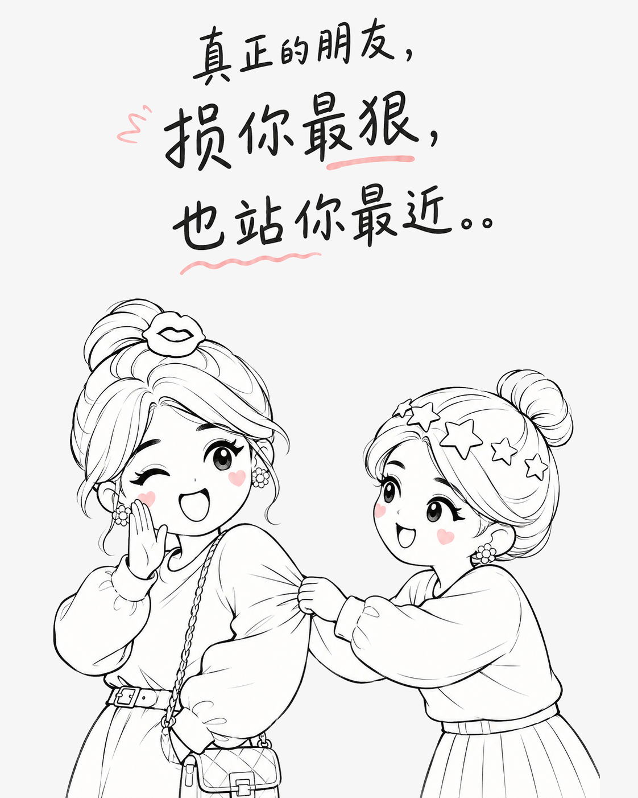
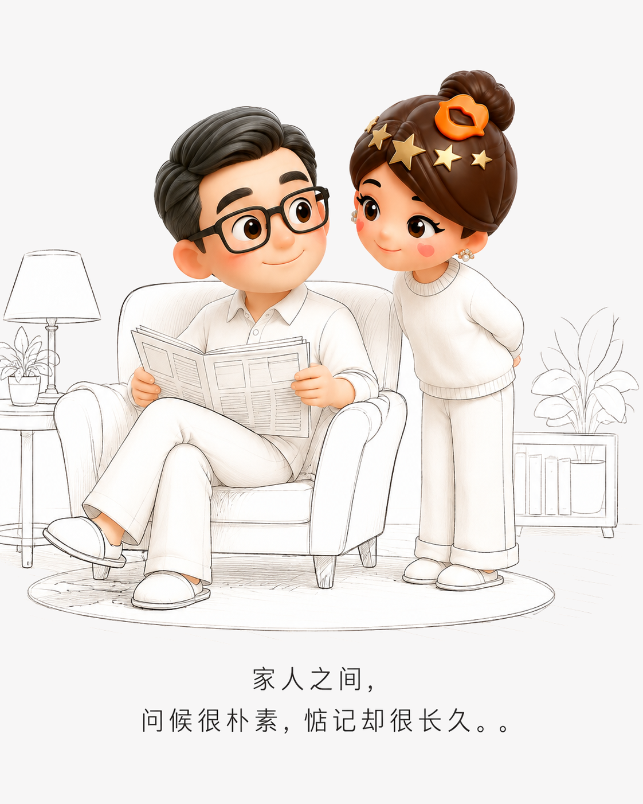

真正的亲近，藏在那些不必客气的时刻
有些关系不靠漂亮话维系，而是靠一次次嘴硬心软、随叫随到和默默补位，慢慢变成生活里的安全感。
朋友：你开口，我就出现
朋友之间最舒服的状态，是求助时不用反复铺垫。临时托付宠物、搬家搭把手、手头紧时先替你撑一撑，嘴上总要调侃几句，行动却从不含糊。人情可以慢慢还，信任却在一次次回应里变得牢靠。

伴侣：嫌弃是表面，照顾是本能
亲密关系里，很多关心并不郑重其事。有人嘴上说你麻烦，却会在深夜送来热食；有人嫌你挑剔，转身仍把家务做好。两个人不必事事道谢，因为愿意分担，早已成了相处的习惯。
家人：话说得重，心放得最软
家人常把关心藏进唠叨里：嫌你不会照顾自己，却总惦记饭菜；嘴上说各管各的，遇到困难还是第一时间伸手。家里的账目未必清楚，彼此的牵挂却从来不会漏记。

好的关系，都允许彼此不完美
真正长久的关系，不要求每句话都体面，也不计算每次付出是否对等。你可以麻烦我，我也可以在你需要时靠近；那些看似琐碎的帮忙，最后会变成岁月里最可靠的回声。